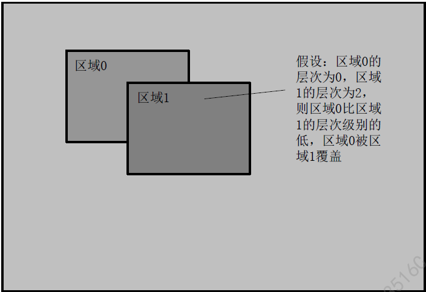

9.2. Design Overview¶
9.2.1. System Architecture¶
Regional Management can create regions, ControloverlaytoitemVideo, andcanControlcurrentlytimehide, orisoverlaytootherVideoMedium.
Region type
Overlay: video overlay region, SupportBitmapimageload, background colormoreetc.Function
OverlayEx: currentlyNot supported
Cover: video cover region, Supportblockcover
CoverEx: extendedvideo cover region, Supportblockcover, withCovernotsameisSupportregion layer
Mosaic: mosaiccoverRegion
region layer
region layermeansRegionoverlaylevel, layersecondaryvaluelarger, meansRegionDisplaylevelheight. When occurtime, layersecondarywillwilllayersecondary.

BitmapFigureload
isrefers towillBitmapDatatoRegionMemoryspacein, If isBitmapandRegionFormathas, For exampleBitmapisARGB8888, RegionisARGB1555, need toperformDataConversion. BitmapwillfromMemoryleftonstartfill, Bitmapnotcangreater thanRegionMemory.
BitmapSetARGBFormattimeColoraccording to standardARGBFormat, ifARGB8888 [31:0] A:R:G:B 8:8:8:8 end.
BitmapFigureloadSupporttwoMethod:
through CVI_RGN_SetBitMap willBitmaptoregion canvasMemory. thisnumberwillpleaseIONMemoryused to storeBitmapData.
through CVI_RGN_GetCanvasInfo Getregion canvasMemoryAddress, connectUseBitmapDatamoreincanvas memoryon. morecompleteafter, inby CVI_RGN_UpdateCanvas thiscanvas updateisDisplay.
RegionAttribute
Create a Regiontime, need toSetthisRegionAttribute. withOverLayisexample, includingPixel format, Sizeandbackground coloretc..
Channel attributes
Channel attributesDefinitionRegioninitemBindChannelonDisplayness. For example, OverlayChannel attributesincludingDisplayPosition.
9.2.2. Precautions¶
regionModuleInformation(CV184x VOModuleNot supportedRGN)
Type | Module | Device numberRange | Channel numberRange |
|---|---|---|---|
OVERLAY | VPSS | [0, VPSS_MAX_GRP_NUM -1] | [0, VPSS_MAX_PHY_CHN_NUM -1] |
COVER | VPSS | [0, VPSS_MAX_GRP_NUM -1] | [0, VPSS_MAX_PHY_CHN_NUM -1] |
COVEREX | VPSS | [0, VPSS_MAX_GRP_NUM -1] | [0, VPSS_MAX_PHY_CHN_NUM -1] |
MOSAIC | VPSS | [0, VPSS_MAX_GRP_NUM -1] | [0, VPSS_MAX_PHY_CHN_NUM -1] |
Function | OVERLAY | COVER | COVEREX | MOSAIC |
Module | VPSS | VPSS | VPSS | VPSS |
Pixel format | ARGB1555 ARGB4444 ARGB8888 | ARGB1555 ARGB4444 ARGB8888 | ARGB1555 ARGB4444 ARGB8888 | N/A |
overlaylayersecondary | N/A | N/A | Support | N/A |
bitsFigurefill | Support | N/A | N/A | N/A |